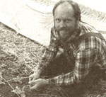
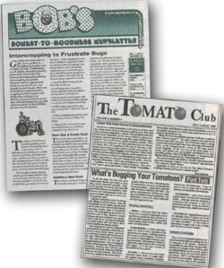
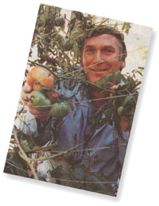
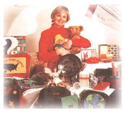
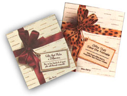

BITS AND PIECES
Here atMOTHER we get mail-lots and lots of it. Every day we sort through a pile of letters from readers, surveys, queries, and press releases. Every so often, as we open and write back or open and file them, we discover that someone, somewhere has also been infected with the publication bug. And, with the development of desk-top publishing, some folks have found a cure for this bug, in the form of newsletters. These beefed-up pamphlets provide a wealth of information to a highly defined audience. They are commonly sans advertisements, which accounts for the slightly higher subscription price. Of course, we most commonly receive newsletters useful for gardeners, farmers, and do-ityourselfers. We wanted to let you know about some interesting and worthy gems out there.
Bob's Honest to Goodness Newsletter
Packed with information for farmers and gardeners alike, Bob's is, indeed, honest to goodness.
Recently started and completely written by Robert Kourik, this newsletter features one in-depth cover story per issue. For example, "Intercropping to Frustrate Bugs" was featured in the second issue. The lead story is followed by a couple of other informative articles under the heading "Don't Myth the Point, Setting Straight the Biggest Myths
Bob Kourik at work in the garden.
About Our Home and Yard," which discusses irrigation.
You'll find "Kernels of Truth" interspersed throughout, which are "nut-meats of wisdom" about everything from flowers to plants to chayote to inline irrigation emitter tubing. Also, throughout the promised "at least 12 pages," there are charts and illustrations supplementing the stories.
Because it is his very own newsletter, he could shamelessly self-promote, but Bob promises to keep the "promotion of stuff " to one page.
Twenty dollars buys four issues, with a minimum of twelve pages each. Contact Robert Kourik at P.O. Box 1841, Santa Rosa, CA 95402.
The Tomato Club
The name of this newsletter pretty much sums up its content. Eventually you'll find anything you've ever wanted to know about tomatoes and tomato-related topics within its pages.
On the front page, you'll see "From the Publisher's Greenhouse," by Rob Ambrose, which is akin to a letter from the editor in that it outlines the stories the issue covers. Additionally, there is the beginning of the main feature article, such as "What's Bugging Your Tomatoes," an informative piece about "preventative ways to manage insects" and a "look at some of the most likely insects you will see on your tomatoes."
Small newsletters, independent publishers, big ideas.
Further into the eight or so pages, there are smaller articles concerning the likes of tomatillos and other tomato things. You will find some illustration and perhaps a photo.
Closing the issue is "Reiners' Review," which is written by Stephen Reiners, Ph.D., the technical editor of the newsletter. He explains tomato questions: "Are `organic' tomatoes superior?"
The Tomato Club is published six times a year, with a subscription price of $15.95. Send checks to The Tomato Club, 114 E. Main St., Bogota, New Jersey 07603.
-Meleah Rush
A Season for Better Ideas
Tis' the season... unfortunately for most people, it's the season to wait in lines at crowded stores to buy expensive, inane items.
This holiday season, instead of falling into that all too familiar trap, perhaps you might be looking for a meaningful alternative. Writer/self-publisher Ellen Berry has complied a listing of 165 nonprofit groups that raise funds by selling everything from greeting cards to jewelry to adoption papers of any animal of your choice.
"What a great idea," is the response that Ellen most frequently hears. She was inspired to write this book in 1992, when she bought a greeting card from a card store to support The American Cancer Society. She wondered why she should buy from a card store when she could buy directly from the Cancer Society, with all of the money going to the organization. What followed was an exhaustive research effort that resulted in the book entitled Gifts That Make a Difference: How to Buy Hundreds of Great Gifts Sold Through Non-Profits, which sells for $7.95.
Ellen uses the term giving twice to describe the idea of giving nonprofit gifts that mutually benefit the organization and the recipient.One of those organizations is the Children's Cancer Center, in Tampa, Florida. The profits from the greeting cards, which are designed by the young patients, go toward the expensive cost of treatment. Another participating organization is the American Forestry Association, which has several tree planting programs, including one that Uses seeds from Walden Woods.
Ellen Berry has been on CNN and has also graced the pages of several magazines. With all of the success of her first book, Ellen is now releasing her second, entitled Gifts That Save the Animals: 1001 Great Gifts Sold by NonProfits That Protect Animals, for $9.95.
For more information contact Foxglove Publishing, P.O. Box 292500, Dayton, OH 45429-0500. (513) 293-7107.
-Kevin O'Keeffe
|
 |
 |
 |
|
 |
 |
|